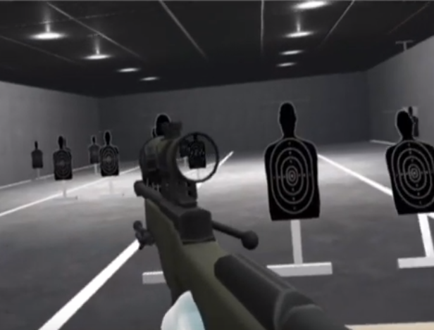

Our project was done entirely with the Unity engine. Our assets (the models and sounds) came from the Unity asset store or were open source online. We created the environment, the gun animations, and wrote the scripts.
Bullets were done with raycasts and could thus interact with the targets in the scene. When a raycast hits a GameObject tagged as a target, the entire target model is translated and rotated to mimic being hit by a large force. The rotation was linearly interpolated in order to look smooth. Rotations took a while to get right because the childed models were rotated, thus their coordinates were relative to their parent's rotation/position, not the world axis.
A second camera, separate from the player's VR camera, was childed under the sniper and placed directly in front of the scope model. A circular mask was overlaid to turn the camera’s view, which was a plane, into a transparent circle with blocked-out borders. Next, the scope camera’s field of view was decreased to create a zoom effect. Finally, a 2D image of a scope reticle was placed on top of the mask.
|

|